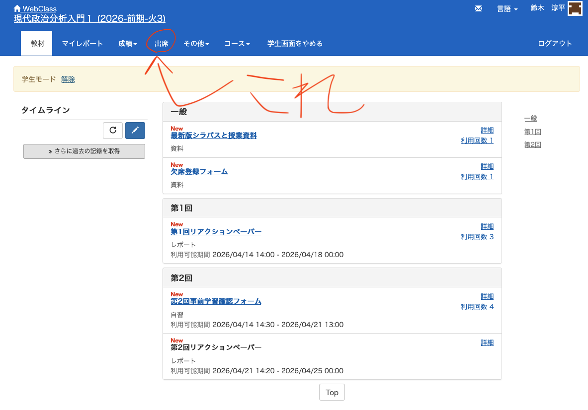
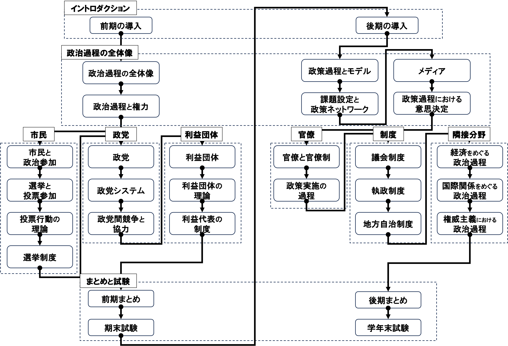
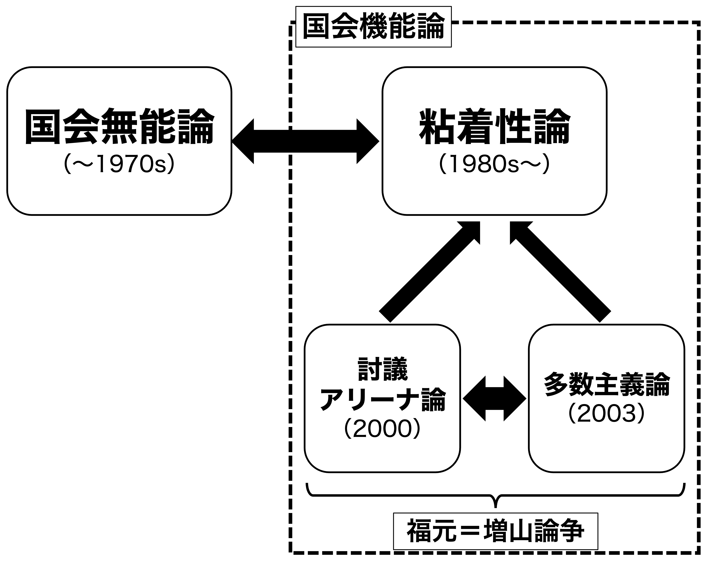

23/議会制度
政治過程論
2026-11-19
出席登録をお願いします

今日の目次
- はじめに
- 議会の機能と能力
- 議会類型論
- 国会無能論と粘着性論
- 福元＝増山論争
- まとめ
はじめに
先週のRPより
TBD
本日の目的と到達目標
目的
民主主義政治の中核である議会を考察する。議会が持つ2つの能力（政策決定力と政策修正力）を紹介し、行政国家化する中での議会の役割を検討する。また、日本の国会をめぐる国会無能論と国会機能論との論争、および福元＝増山論争を学び、国会の役割を理論的実証的に考える。
到達目標
- 議会が持つ2つの能力（政策決定力と政策修正力）を説明できる。
- ポルスビーの議論に基づいて、変換型議会とアリーナ型議会の違いを説明できる。
- 日本における国会無能論と国会機能論（粘着性論）の論争を説明できる。
- 日本の国会をめぐる福元＝増山論争を説明できる。
本日の授業の位置付け

議会の機能と能力
議会
民主主義政治の中核をなす制度であり、第一義的には立法を司る
質問
現在の高市総理は国会出席が少ないことが指摘されています。これに対して、限られた時間を政策決断に使えるという見地から擁護する意見もあれば、国会軽視であるとして批判する意見もあります。あなたはどう思いますか。
WebClassチャットで記入
行政国家 (administrative state)
行政府が議会に対して優位に立つような国家
- 世界大戦による国民総動員
- ニューディール政策以降の「大きな政府」化
専門知識の重要性の増大、官僚制の発達、利益団体の活発化→議会の衰退？
議会の2つの能力
ノートンは議会が持つ能力を2つに分類
- 政策形成力…政策を修正したり拒否するだけでなく、自己の政策を提示する能力
- 政策修正力…政策を修正したり拒否する能力であり、己の政策を提示する能力は含まれない）
→行政国家化する中で形成力は失われつつあるが修正力は未だ顕在
議会類型論
議会類型論
ポルスビーは議会をその果たす役割に応じて変換型議会とアリーナ型議会の2つに分類
変換型議会
社会における多様な要望を吸い上げ、それを政策とした上で法律に変換
- アメリカ議会が典型
- 法案は全て議員提出
- 委員会中心主義
- 議員の自律性が高く、交叉投票が普通
- 審議の過程で利益団体がロビイング
アリーナ型議会
与野党による政策論争の舞台となって、有権者に政策的な争点を明らかにする
- イギリス議会が典型
- 法案は基本的に内閣提出
- 本会議中心主義
- 議員の自律性が低く、政党が強く規律
- フロントベンチャーとバックベンチャー
- 利益団体より有権者の支持獲得が中心
クイズ
日本では1990年代に国会改革が行われ、以下の4つが実施されました。それぞれ変換型とアリーナ型どちらを狙ったものだと評価できるでしょうか。
- 政党交付金の導入
- 党首討論の導入
- 政策担当秘書の導入
- 政府委員制度の廃止
国会無能論と粘着性論
日本の国会論争

国会をめぐる論争の概略
国会無能論
国会は官僚が作成した政策をただ追認している（ラバースタンプを押している）に過ぎない
- 内閣提出法案は官僚が作成
- 成立率は内閣提出法案が議員提出法案よりも高い（85%vs.27%）
- 内閣提出法案の多くは原案通り成立
1970年代まで官僚優位論と表裏一体をなして主流
粘着性論
マイク・モチヅキは粘着性に着目して国会無能論に反論
粘着性（viscosity）
内閣提出法案の成立を妨害し廃案に追い込む能力
- 二院制…比較的強い参議院の存在
- 会期不継続の原則…会期中に成立しなかった案件は次期に持ち越さない
- 議事運営の全会一致慣例…議院運営委員会や常任委員会理事会
- 委員会中心主義…野党が拒否できる機会の多さ
質問
ここまで国会無能論と粘着性論を紹介しましたが、どちらに説得力があると感じますか。理由を含めて書き込んでください。
WebClassチャットで記入
福元＝増山論争
質問
2015年の安保法案は、最終的には与党の賛成多数で成立しました。
ただしその過程で野党が法案に激しく反発し、政府を厳しく問いただすなど活発な議論が行われました。
この場合国会は「機能した」と言えるでしょうか。理由も含めて書き込んでください。
福元＝増山論争
討議アリーナ論
野党・少数派の強さを強調

多数主義論
与党・多数派の強さを強調

討議アリーナ論1
日本の国会は少数派（野党）が討議を通じた対抗機会を持つアリーナ型
国会で成立した全政府立法を計量分析し、審議様式を3つに分類
- 討議型審議様式…委員会審議が多く、反対者が多い重要法案
- 粘着型審議様式…審議が引き延ばされれ成立まで時間がかかった法案
- 標準型審議様式…審議が少なく対立が弱い法案
→粘着性論が想定する「議論しない抵抗」に対し「議論する抵抗」の存在を明らかに
多数主義論1
日本の国会は多数派（与党）に有利な制度構造をもつ
制度と不成立法案も含めた立法時間の分析
- 議事運営の全会一致は慣例にすぎず明文の制度ではない→多数派に「強行採決」の余地
- 会期不継続の原則も国会法上の規定→多数派はいつでも改正可能
- 会期の長さを決めるのも多数派→臨時会の招集
- 不成立法案は野党が抵抗した法案よりは与党にとって重要でない法案に集中
→ 多数派・与党は制度や有限の時間資源を自分の有利なように活用
まとめ
本日の目的と到達目標
目的
民主主義政治の中核である議会を考察する。議会が持つ2つの能力（政策決定力と政策修正力）を紹介し、行政国家化する中での議会の役割を検討する。また、日本の国会をめぐる国会無能論と国会機能論との論争、および福元＝増山論争を学び、国会の役割を理論的実証的に考える。
到達目標
- 議会が持つ2つの能力（政策決定力と政策修正力）を説明できる。
- ポルスビーの議論に基づいて、変換型議会とアリーナ型議会の違いを説明できる。
- 日本における国会無能論と国会機能論（粘着性論）の論争を説明できる。
- 日本の国会をめぐる福元＝増山論争を説明できる。
次回までに
事後学習
- 授業資料を見直し、目標到達をセルフチェック
- WebClass上でのリアクションペーパー入力（日曜日まで）
事前学習
- 【事前】教科書（VII-2）を読む。
議会制度